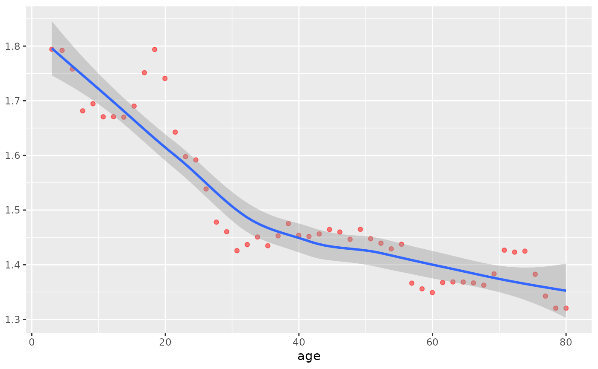
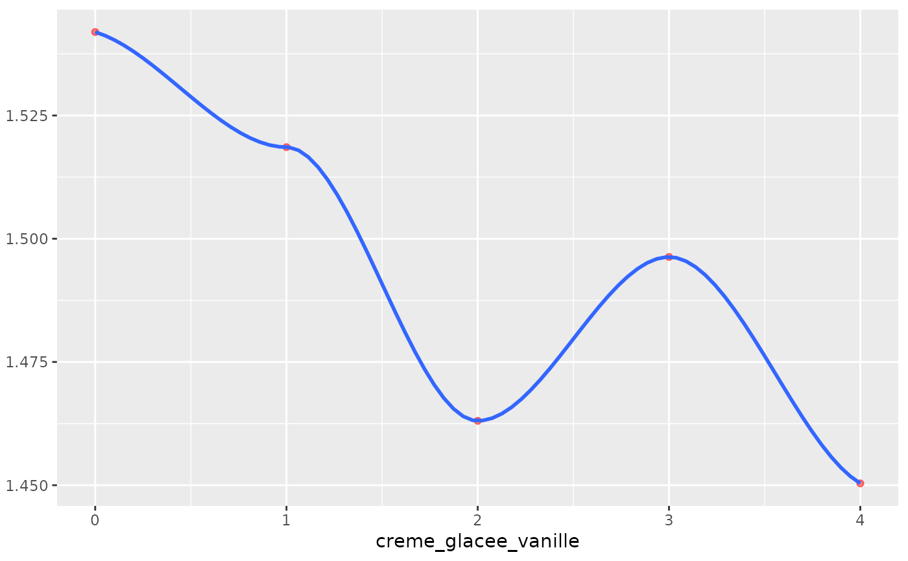

Plots the partial dependence of a random forest model response to a predictor (based on the training dataset)
partial_dependence_plot.RdPlots the partial dependence of a random forest model response to a predictor (based on the training dataset)
Examples
# example code
data(icecream)
lemon_rf=run_rf(icecream %>%
dplyr::select(-id) %>%
dplyr::mutate_all(optimize_for_rf),
response="sorbet_citron")
#> Warning: The response has five or fewer unique values. Are you sure you want to do regression?
partial_dependence_plot(lemon_rf,predictor="age")
#> [1] 5.434888e-06
#> ***:<0.001, **:<0.01, *:<0.05, .:<0.1, not significant:>0.1
#> `geom_smooth()` using formula = 'y ~ x'

partial_dependence_plot(lemon_rf,predictor="creme_glacee_vanille")
#> [1] 0.694699
#> ***:<0.001, **:<0.01, *:<0.05, .:<0.1, not significant:>0.1
#> `geom_smooth()` using formula = 'y ~ x'
